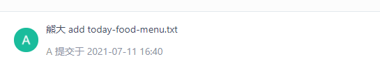
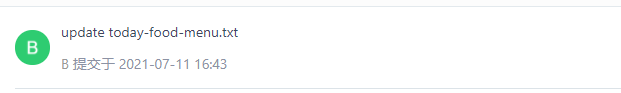
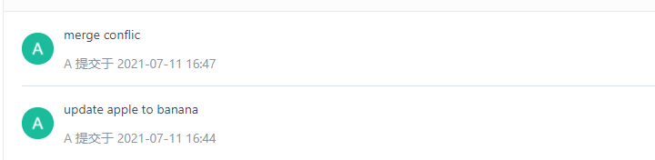
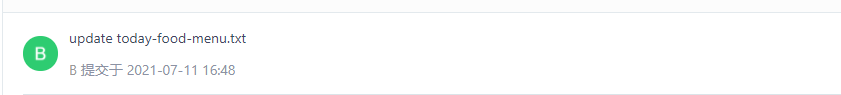
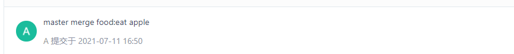

- AQS 万字图文全面解析.md.html
- Docker 镜像构建原理及源码分析.md.html
- ElasticSearch 小白从入门到精通.md.html
- JVM CPU Profiler技术原理及源码深度解析.md.html
- JVM 垃圾收集器.md.html
- JVM 面试的 30 个知识点.md.html
- Java IO 体系、线程模型大总结.md.html
- Java NIO浅析.md.html
- Java 面试题集锦（网络篇）.md.html
- Java-直接内存 DirectMemory 详解.md.html
- Java中9种常见的CMS GC问题分析与解决（上）.md.html
- Java中9种常见的CMS GC问题分析与解决（下）.md.html
- Java中的SPI.md.html
- Java中的ThreadLocal.md.html
- Java线程池实现原理及其在美团业务中的实践.md.html
- Java魔法类：Unsafe应用解析.md.html
- Kafka 源码阅读笔记.md.html
- Kafka、ActiveMQ、RabbitMQ、RocketMQ 区别以及高可用原理.md.html
- MySQL · 引擎特性 · InnoDB Buffer Pool.md.html
- MySQL · 引擎特性 · InnoDB IO子系统.md.html
- MySQL · 引擎特性 · InnoDB 事务系统.md.html
- MySQL · 引擎特性 · InnoDB 同步机制.md.html
- MySQL · 引擎特性 · InnoDB 数据页解析.md.html
- MySQL · 引擎特性 · InnoDB崩溃恢复.md.html
- MySQL · 引擎特性 · 临时表那些事儿.md.html
- MySQL 主从复制 半同步复制.md.html
- MySQL 主从复制 基于GTID复制.md.html
- MySQL 主从复制.md.html
- MySQL 事务日志(redo log和undo log).md.html
- MySQL 亿级别数据迁移实战代码分享.md.html
- MySQL 从一条数据说起-InnoDB行存储数据结构.md.html
- MySQL 地基基础：事务和锁的面纱.md.html
- MySQL 地基基础：数据字典.md.html
- MySQL 地基基础：数据库字符集.md.html
- MySQL 性能优化：碎片整理.md.html
- MySQL 故障诊断：一个 ALTER TALBE 执行了很久，你慌不慌？.md.html
- MySQL 故障诊断：如何在日志中轻松定位大事务.md.html
- MySQL 故障诊断：教你快速定位加锁的 SQL.md.html
- MySQL 日志详解.md.html
- MySQL 的半同步是什么？.md.html
- MySQL中的事务和MVCC.md.html
- MySQL事务_事务隔离级别详解.md.html
- MySQL优化：优化 select count().md.html
- MySQL共享锁、排他锁、悲观锁、乐观锁.md.html
- MySQL的MVCC（多版本并发控制）.md.html
- QingStor 对象存储架构设计及最佳实践.md.html
- RocketMQ 面试题集锦.md.html
- SnowFlake 雪花算法生成分布式 ID.md.html
- Spring Boot 2.x 结合 k8s 实现分布式微服务架构.md.html
- Spring Boot 教程：如何开发一个 starter.md.html
- Spring MVC 原理.md.html
- Spring MyBatis和Spring整合的奥秘.md.html
- Spring 帮助你更好的理解Spring循环依赖.md.html
- Spring 循环依赖及解决方式.md.html
- Spring中眼花缭乱的BeanDefinition.md.html
- Vert.x 基础入门.md.html
- eBay 的 Elasticsearch 性能调优实践.md.html
- 不可不说的Java“锁”事.md.html
- 互联网并发限流实战.md.html
- 从ReentrantLock的实现看AQS的原理及应用.md.html
- 从SpringCloud开始，聊微服务架构.md.html
- 全面了解 JDK 线程池实现原理.md.html
- 分布式一致性理论与算法.md.html
- 分布式一致性算法 Raft.md.html
- 分布式唯一 ID 解析.md.html
- 分布式链路追踪：集群管理设计.md.html
- 动态代理种类及原理，你知道多少？.md.html
- 响应式架构与 RxJava 在有赞零售的实践.md.html
- 大数据算法——布隆过滤器.md.html
- 如何优雅地记录操作日志？.md.html
- 如何设计一个亿级消息量的 IM 系统.md.html
- 异步网络模型.md.html
- 当我们在讨论CQRS时，我们在讨论些神马？.md.html
- 彻底理解 MySQL 的索引机制.md.html
- 最全的 116 道 Redis 面试题解答.md.html
- 有赞权限系统(SAM).md.html
- 有赞零售中台建设方法的探索与实践.md.html
- 服务注册与发现原理剖析（Eureka、Zookeeper、Nacos）.md.html
- 深入浅出Cache.md.html
- 深入理解 MySQL 底层实现.md.html
- 漫画讲解 git rebase VS git merge.md.html
- 生成浏览器唯一稳定 ID 的探索.md.html
- 缓存 如何保证缓存与数据库的双写一致性？.md.html
- 网易严选怎么做全链路监控的？.md.html
- 美团万亿级 KV 存储架构与实践.md.html
- 美团点评Kubernetes集群管理实践.md.html
- 美团百亿规模API网关服务Shepherd的设计与实现.md.html
- 解读《阿里巴巴 Java 开发手册》背后的思考.md.html
- 认识 MySQL 和 Redis 的数据一致性问题.md.html
- 进阶：Dockerfile 高阶使用指南及镜像优化.md.html
- 铁总在用的高性能分布式缓存计算框架 Geode.md.html
- 阿里云PolarDB及其共享存储PolarFS技术实现分析（上）.md.html
- 阿里云PolarDB及其共享存储PolarFS技术实现分析（下）.md.html
- 面试最常被问的 Java 后端题.md.html
- 领域驱动设计在互联网业务开发中的实践.md.html
- 领域驱动设计的菱形对称架构.md.html
- 高效构建 Docker 镜像的最佳实践.md.html
漫画讲解 git rebase VS git merge
关于 git rebase ，首先要理解的是它解决了和 git merge 同样的问题。这两个命令都旨在将更改从一个分支合并到另一个分支，但二者的合并方式却有很大的不同。
当你在专用分支上开发新 feature 时，然后另一个团队成员在 master 分支提交了新的 commit，这会发生什么？这会导致分叉的历史记录，这个问题对使用 Git 作为协作工具的任何人来说都应该很熟悉，那么该如何解决呢，这就是本文要讲解的内容。
Chat 内容：
- 分析代码冲突的原因，并通过漫画的形式举例讲解。
- 分析
git merge合并分支代码 git rebase合并分支代码，并通过漫画的形式举例讲解git merge对比git rebase该如何选择？- 加餐学习：
git stash解决线上代码冲突
分析代码冲突的原因，并通过漫画的形式举例讲解
代码冲突是团队协同开发绕不开的问题，要更好的解决它，首先我们就得深入的认识它。首先我们有一个基本的认识就是代码冲突都是在代码合并的时候才产生。所以代码冲突通常会在以下两个场景出现：
- 本地仓库拉取远端仓库时产生
- 本地主分支合并代码分支时产生
下面我通过漫画的形式来演示两种场景。首先准备两个本地客户端和一个代码仓库，两个客户端为了好记，姑且就叫熊大熊二吧（简称A和B）。
码云（gitee.com）代码提交仓库网络图展现很好，后面将代码托管在码云上演示。
我这里提前在码云创建一个git-conflict-demo的项目，此时里面暂时没有任何内容。
本地仓库拉取远端仓库时产生
git clone https://gitee.com/chandler2code/git-conflict-demo.git
cd git-conflict-demo
echo "apple">today-food-menu.txt
git add .
git commit -m "熊大 add today-food-menu.txt"
git push origin master
熊大添加了一个today-food-menu.txt文件，并在里面填入了apple，表示他今晚的食物想吃苹果。

于此同时，熊二也和他大哥一样的想法，但是他呢稍微慢了一步，此时熊大已经将代码提交到远端仓库，所以此时仓库里面已经有了today-food-menu.txt文件，并且里面的食物清单是苹果。
因为熊二不想吃苹果，所以他果断将today-food-menu.txt里面的内容改为了蜂蜜honey。
git clone https://gitee.com/chandler2code/git-conflict-demo.git
sed -i 's/apple/honey/g' today-food-menu.txt
git add .
git commit -m 'update today-food-menu.txt'
git push origin master

熊大在提交代码后就有点后悔了，他觉得昨天才吃过苹果，今天换换口味吃香蕉了。
于是他将食物清单改为香蕉后再次提交。
sed -i 's/apple/banana/g' -i today-food-menu.txt
git add .
git commit -m 'update apple to banana'
git push origin master
但是这次可没有这么顺利就修改成功了，Git 报错信息
To https://gitee.com/chandler2code/git-conflict-demo.git ! [rejected] master -> master (fetch first) error: failed to push some refs to 'https://gitee.com/chandler2code/git-conflict-demo.git' hint: Updates were rejected because the remote contains work that you do hint: not have locally. This is usually caused by another repository pushing hint: to the same ref. You may want to first integrate the remote changes hint: (e.g., 'git pull …') before pushing again. hint: See the 'Note about fast-forwards' in 'git push --help' for details.
意思就是当前分支与远端的分支相比，远端已经发生了修改，如果要继续操作，则要先执行命令git pull合并远端的代码。
下面来执行一下git pull，此时冲突就产生了，报错信息：
remote: Enumerating objects: 5, done. remote: Counting objects: 100% (5/5), done. remote: Total 3 (delta 0), reused 0 (delta 0), pack-reused 0 Unpacking objects: 100% (3/3), done. From https://gitee.com/chandler2code/git-conflict-demo 5026b5e..484cb3d master -> origin/master Auto-merging today-food-menu.txt CONFLICT (content): Merge conflict in today-food-menu.txt Automatic merge failed; fix conflicts and then commit the result.
提示today-food-menu.txt产生了冲突，我们打开查看文件内容：
<<<<<<< HEAD
banana
=======
honey
>>>>>>> 484cb3d499b2c8cb762dad09e8fd64c035b90992
可以看到是本地的 banana 与远端的 honey 冲突了，那咋办呀？解决冲突呗。于是熊大和熊二坐在一起讨论，最终决定还是吃香蕉吧，于是熊大把蜂蜜部分去掉，保留香蕉再次提交，最后修改成功。
git add .
git commit -m 'merge conflic'
git push origin master

总结：这里我们可以看到，冲突的原因就是当本地的文件和远端的文件都做了修改时，本地拉取远端时首先会告知由于远端有变更，需要git pull，执行git pull之后 Git 迷糊了，心想你们到底想要哪个内容呢，算了我不管了，直接给你们算冲突吧，你们自己决定保留哪些内容。
本地主分支合并代码分支时产生
熊大在有了上次的本地拉取远端代码冲突时有了新的思考。
于是第二天在修改食物清单时，他选择自己先在本地创建分支，然后在自己的分支上修改，这样就可以时不时的切换到 master 分支拉取最新的代码。
#创建并切换到本地food分支
git checkout -b food
#今天他想吃苹果了
sed -i 's/banana/apple/g' -i today-food-menu.txt
git add .
#更改提交到本地
git commit -m 'update today-food-menu.txt: eat apple'
熊二今天依旧想吃蜂蜜，于是他将昨天的更新改拉取到本地后，将其更改为honey。
git pull
sed -i 's/banana/honey/g' -i today-food-menu.txt
git add .
git commit -m 'update today-food-menu.txt'
git push origin master

熊大切换到master分支拉取，查看代码变化。
git checkout master
git pull
熊大拉取代码后发现today-food-menu.txt被更改为了honey。
熊大考虑到仓库的蜂蜜快坏了，所以他这下坚持要吃苹果，于是他将自己的 food 分支的更改合并到 master 分支。有两种方式可以做到，分别是git merge和git rabase，后面都会详细的做讲解。我这里先用git merge解决冲突。
git merge food
合并分支时冲突产生，错误信息：
Auto-merging today-food-menu.txt CONFLICT (content): Merge conflict in today-food-menu.txt Automatic merge failed; fix conflicts and then commit the result.
再查看冲突的内容：
<<<<<<< HEAD
honey
=======
apple
>>>>>>> food
可以看到 master 的 honey 和 food 分支的 apple 冲突了，于是又要解决冲突啦。熊大找到了熊二坐在一起讨论，“弟啊！苹果快坏了，咱今天就吃苹果哈！”，熊二也没有办法，最终再次屈服了。于是熊大把蜜蜂部分去掉，保留苹果部分，再次提交到远端仓库。
git add .
git commit -m 'master merge food:eat apple'
git push origin master

总结：在前面我们看到，如果 master 分支上开发。由于 master 分支时刻保持最新的发行代码，所以变动频繁，因此拉取 master 分支非常容易造成冲突。因此这里是将更改在本地分支上进行，在需要合并时，切换到 master 分支拉取最新代码后，根据拉取的内容，再去合并分支。同时这种方式也是更受大家推崇的。
分析 git merge 合并分支代码的特点
上一节演示了冲突是如何产生的，并演示了通过git merge方式合并分支冲突。这一章节我们来分析一下get merge合并分支代码冲突的特点。
云端仓库查看 commit 记录
熊二将食物清单更新为 honey 并提交到远端仓库后，此时熊大在本地 commit，所以我们看到熊大的 commit 时间在熊二提交更新之前。熊二提交更新后，熊大切换到 master 分支，并更新代码到本地后，在合并分支时产生了冲突。为了合并冲突，多出了一次 merge 的 commit 记录。
我们再来云端看一下提交结构图：
从图中可以看到，master merge food: eat apple这次commit将前面的两次提交进行了合并，因为前面的这两次commit的代码完全相同的点在merge confilc这次提交，所以从merge confic到master merge food:eat apple这里多出来一个分叉的历史记录（绿线）。
在实际的生产开发过程中，采用这种方式会导致分叉的 commit 记录非常多，不利于开发人员代码审查。下面我们来看一下git rebase又是如何解决的呢？
git rebase 合并分支代码，并通过漫画的形式举例讲解
熊大在本机创建 food2 分支，在本地分支上将内容修改为 honey。
git checkout -b food2
sed -i 's/apple/honey/g' -i today-food-menu.txt
git add .
git commit -m 'update today-food-menu.txt:honey'
在熊大还没有 push 到远端时，他想起之前答应了熊二要像请他喝咖啡，于是他又改变为喝咖啡了。
sed -i 's/honey/coffee/g' -i today-food-menu.txt
git add .
git commit -m 'update today-food-menu.txt:coffee'
就在熊二还没有 push 到远端的时候，熊二本来计划吃蜂蜜的，但是想到蜂蜜不多了，决定留着过年吃，今天还是吃香蕉。于是将修改后的内容推送到了远端。
git pull
sed -i 's/apple/banana/g' -i today-food-menu.txt
git add .
git commit -m 'update today-food-menu.txt:banana'
git push origin master
熊大此时准备将代码push到远端，首先他切换到master分支，拉取最新的代码。
git checkout master
git pull
此时熊大发现，today-food-menu.txt有变动，势必会造成代码冲突。下面通过git rebase来合并分支代码。
首先切换到 master 分支拉取最新代码，这个已经做了。下面是切换到 food2 分支指定 rebase 操作。
git checkout food2
git rebase master
输出信息
First, rewinding head to replay your work on top of it… Applying: update today-food-menu.txt:honey Using index info to reconstruct a base tree… M today-food-menu.txt Falling back to patching base and 3-way merge… Auto-merging today-food-menu.txt CONFLICT (content): Merge conflict in today-food-menu.txt error: Failed to merge in the changes. Patch failed at 0001 update today-food-menu.txt:honey Use 'git am --show-current-patch' to see the failed patch
Resolve all conflicts manually, mark them as resolved with "git add/rm <conflicted_files>", then run "git rebase --continue". You can instead skip this commit: run "git rebase --skip". To abort and get back to the state before "git rebase", run "git rebase --abort".
又回到了我们熟悉的合并冲突，查看today-food-menu.txt内容：
<<<<<<< HEAD
banana
=======
honey
>>>>>>> update today-food-menu.txt:honey
还记得吗，这次是熊大第一次 commit，他想着给熊二吃蜂蜜，但是发现远端拉取下来是吃香蕉。于是找了熊二商量，考虑到蜂蜜确实不多了，于是还是决定吃香蕉吧。所以此时保留 HEAD，删除update today-food-menu.txt:honey的内容。
修改完毕后，添加到本地库，继续 rebase。
git add .
git rebase --continue
输出信息：
No changes - did you forget to use 'git add'? If there is nothing left to stage, chances are that something else already introduced the same changes; you might want to skip this patch.
意思这次 rebase 合并冲突后和远端的内容一致，可以选择跳过这次 rebase。
git rebase --skip
跳过这次 commit 之后，来到下一次，输出信息：
Applying: update today-food-menu.txt:coffee Using index info to reconstruct a base tree… M today-food-menu.txt Falling back to patching base and 3-way merge… Auto-merging today-food-menu.txt CONFLICT (content): Merge conflict in today-food-menu.txt error: Failed to merge in the changes. Patch failed at 0002 update today-food-menu.txt:coffee Use 'git am --show-current-patch' to see the failed patch
Resolve all conflicts manually, mark them as resolved with "git add/rm <conflicted_files>", then run "git rebase --continue". You can instead skip this commit: run "git rebase --skip". To abort and get back to the state before "git rebase", run "git rebase --abort".
还记得吗，熊大还提交过一次将蜂蜜改为咖啡，我们来看一下冲突的内容：
<<<<<<< HEAD
banana
=======
coffee
>>>>>>> update today-food-menu.txt:coffee
这时熊大对熊二说，不好意思哥忘了之前决定了喝咖啡的，于是哥俩商量了一下，决定还是喝咖啡了。所以删除 HEAD 内容，保留update today-food-menu.txt:coffee这次 commit 的内容。
修改完毕后，添加到本地库，继续 rebase。
git add .
git rebase --continue
输出内容：
Applying: update today-food-menu.txt:coffee
此时没有提示任何的信息，所以 rebase 结束。其实版本高一点的 Git（2.22及以上），是有 rebase 进度条展示的，可以看到 rebase 的进度，如图所示：
rebase 结束后切换到 master 分支合并分支代码，然后直接推送到远端即可（此时不用指定 commit）。
git checkout master
git merge food2
git push origin master
可以看到，一共有3次 commit 记录，分别是熊大2次和熊二1次。没有多出来 merge 的 commit 记录。
我们再来云端看一下提交结构图：
由于没有多出 merge 的 commit 记录，所以不会存在分叉的 commit 记录，代码记录都是以线性的方式，做代码审查一目了然。
总结：有的小伙伴可能会说，看着前面的演示步骤好复杂啊。确实是，rebase 其实相当于是 merge 的进阶使用方式，目的就是为了让代码 commit 呈线性记录。
git merge 对比 git rebase 该如何选择？
git merge 操作合并分支会让两个分支的每一次提交都按照提交时间（并不是 push 时间）排序，并且会将两个分支的最新一次 commit 点进行合并成一个新的 commit，最终的分支树呈现非整条线性直线的形式。
git rebase 操作实际上是将当前执行 rebase 分支的所有基于原分支提交点之后的 commit 打散成一个一个的 patch，并重新生成一个新的 commit hash 值，再次基于原分支目前最新的commit点上进行提交，并不根据两个分支上实际的每次提交的时间点排序，rebase 完成后，切到基分支进行合并另一个分支时也不会生成一个新的 commit 点，可以保持整个分支树的完美线性。
从效果出发，如果代码版本迭代快，项目大，参与人多，建议最好用 rebase 方式合并。反之则直接用 merge 即可。
加餐学习：git stash 解决线上代码冲突
以上的演示合并冲突，是为了让我们的 commit 历史记录更加的便于审查。接下来我要说的git stash则是应急所需，平时工作中都是迫不得已的时候采用的，学会了以备不时之需。
- 当正在 dev 分支上开发某个项目，这时项目中出现一个 bug，需要紧急修复，但是正在开发的内容只是完成一半，还不想提交，这时可以用
git stash命令将修改的内容保存至堆栈区，然后顺利切换到 hotfix 分支进行 bug 修复，修复完成后，再次切回到 dev 分支，从堆栈中恢复刚刚保存的内容。 - 由于疏忽，本应该在 dev 分支开发的内容，却在 master上进行了开发，需要重新切回到 dev 分支上进行开发，可以用git stash将内容保存至堆栈中，切回到 dev 分支后，再次恢复内容即可。
git stash命令的作用就是将目前还不想提交的但是已经修改的内容保存至堆栈中，后续可以在某个分支上恢复出堆栈中的内容。这也就是说，stash 中的内容不仅仅可以恢复到原先开发的分支，也可以恢复到其他任意指定的分支上。git stash作用的范围包括工作区和暂存区中的内容，也就是说没有提交的内容都会保存至堆栈中。
下面是一些有关stash的常用命令：
git stash：能够将所有未提交的修改（工作区和暂存区）保存至堆栈中，用于后续恢复当前工作目录git stash list：查看当前 stash 的列表，因为有些时候会存多个暂存区git stash pop：将当前 stash 中的内容弹出，并应用到当前工作目录上。git stash apply：将堆栈中的内容应用到当前目录，不同于git stash pop，该命令不会将内容从堆栈中删除，也就说该命令能够将堆栈的内容多次应用到工作目录中，适应于多个分支的情况。git stash clear：除堆栈中的所有内容
总结
本文试图想用全漫画的形式展示，但是发现漫画绘制的时间长，且表达意思没有直接演示命令来的直接，所以曲线救国，采用了故事情节加代码叙述的方式讲解（希望别被骂成标题党）。文章的写作思路是，先从源头出发，了解产生冲突的来源。然后再进一步演示了通过git merge、git rebase合并分支代码，从提交 commit 记录、云端提交结构图、原理几个方面阐述了两者的差异，我个人比较推崇用git rebase。为了让内容更加的充实，文章再最后引入了git stash的内容，限于篇幅和侧重点，git stash只是起到了抛砖引玉的目的，没有展开和举例讲解，这点小伙伴们可以在网上查找资料补充学习。